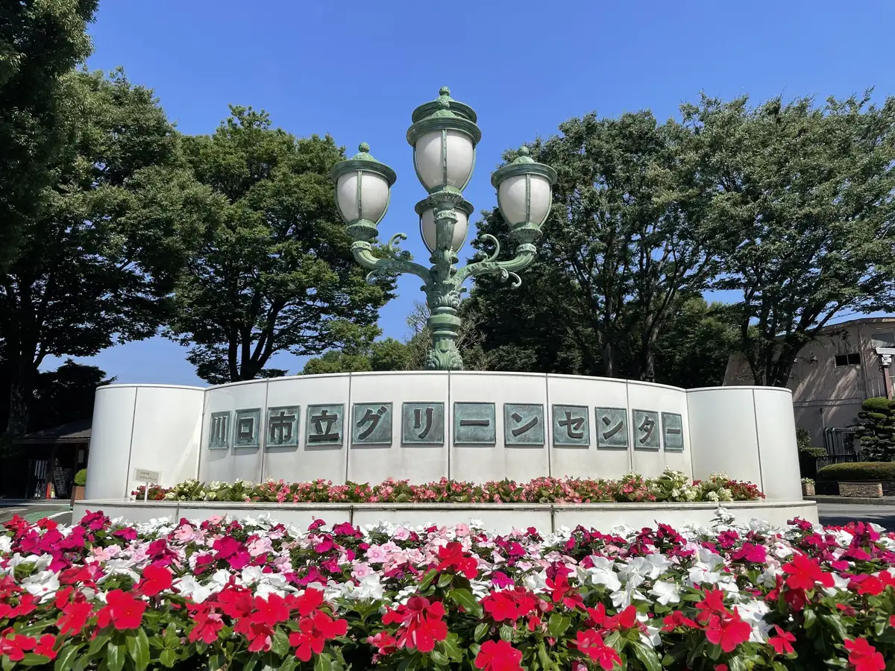
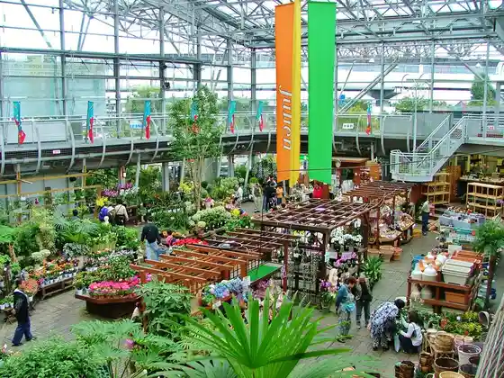
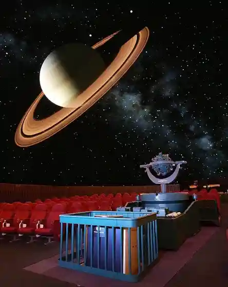
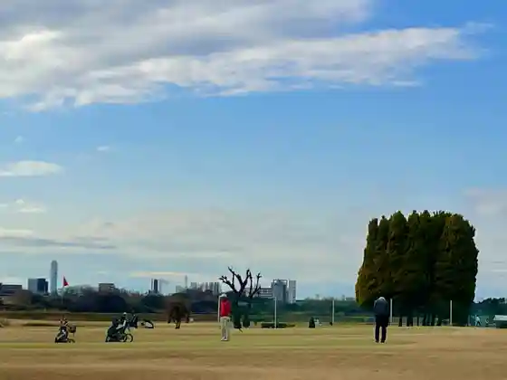
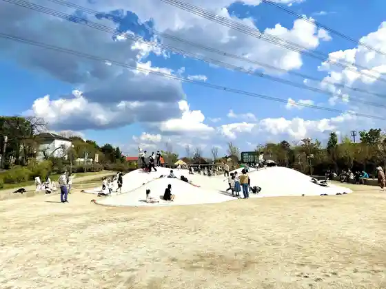

Japan / Saitama / Kawaguchi
Kawaguchi
Kawaguchi · Saitama
Kawaguchi
Highlighted on the Saitama map.

Sights
Kawaguchi Ritsu Guriin Center
Kawaguchi, Saitama · 048-281-2319 · Official / source link
Kawaguchi Ryokka Center Juri An Roadside Station (Kawaguchi Angyo)
Kawaguchi, Saitama · 048-296-4021 · Official / source link

Kawaguchi Ritsu Science Museum (Saiensuwarudo)
Kawaguchi, Saitama · 048-262-8431 · Official / source link

Kawaguchi Ukima Gorufu Ba
Kawaguchi, Saitama · 048-253-1883 · Official / source link

Iina Park Kawaguchi (Akayama Rekishi Nature Park)
Kawaguchi, Saitama · 048-242-6337 · Official / source link

Kawaguchi Haiueioashisu
Kawaguchi, Saitama · Official / source link
Gorira Park
Kawaguchi, Saitama · 048-256-2510 · Official / source link
Kawaguchi Tatebumi Ka Zai Center (Local History Museum)
Kawaguchi, Saitama · 048-283-3552 · Official / source link
Kiso Ro no Fujizuka
Kawaguchi, Saitama · Official / source link
Akayama Jinya Ato
Kawaguchi, Saitama · Official / source link